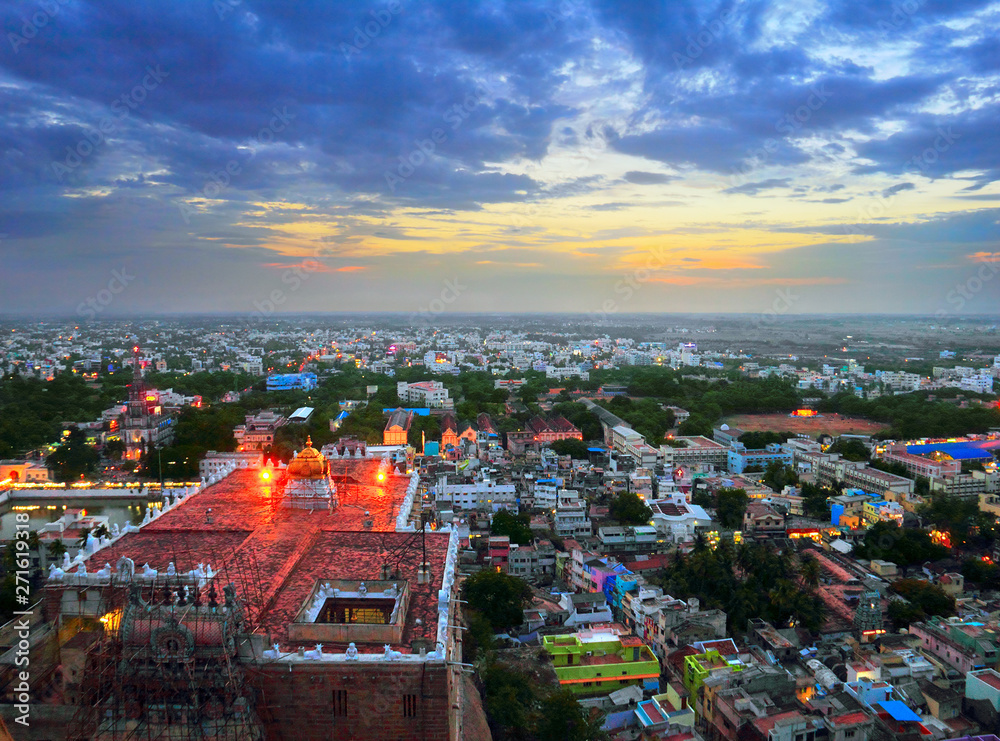

The Thayumanavar Temple is a temple situated in the Rockfort complex (Malaikottai மலைக்கோட்டை) in the city of Tiruchirappalli, India. Shiva is worshipped as Thayumanavar, and is represented by the lingam and his consort Parvati is depicted as Mattuvar Kuzhalammai. The presiding deity is revered in the 7th century Tamil Saiva canonical work, the Tevaram, written by Tamil saint poets known as the nayanars and classified as Paadal Petra Sthalam. According to Hindu legend, a pregnant woman named Rathnavathi was an ardent devotee of Shiva and he arrived in the form of her mother to attend to her delivery. The presiding deity is thus named Thayumanaswamy, the one who acted as mother. The Rockfort is a fortress which stands atop a 273-foot-high rock, consisting of a set of monolithic rocks accommodating many rock-cut cave temples. Originally built by the Pallavas, it was later reconstructed by the Madurai Nayaks and Vijayanagara rulers. The major complex in the temple is believed to be built during the 8th century by the Pandyan Empire. The temple has six daily rituals at various times from 5:30 a.m. to 10 p.m., and twelve yearly festivals on its calendar. The Chittirai festival during the Tamil month of Chittirai (April - May) is celebrated for fifteen days, portraying the various incidents associated with the temple legend. The temple is maintained and administered by the Hindu Religious and Charitable Endowments Department of the Government of Tamil Nadu.
